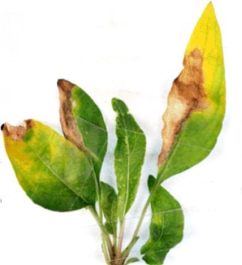

Deficiência de Boro (B) em Plantas Aquáticas
A deficiência de boro (B) em plantas de aquários de água doce é rara, mas crítica, pois o boro é um micronutriente imóvel essencial para a síntese da parede celular, divisão celular, transporte de açúcares e desenvolvimento de meristemas (pontos de crescimento). Sua carência afeta principalmente tecidos jovens, já que a planta não pode redistribuí-lo de folhas velhas para novas. Abaixo, descrevo sua manifestação técnica:
Sintomas Técnicos da Deficiência de Boro:
- Necrose apical e deformações em brotos novos:
- Pontos de crescimento (ápices) param de se desenvolver, tornando-se escuros, necróticos ou retorcidos.
- Folhas novas emergem distorcidas, com formato irregular ou enrolado (ex.: folhas de Rotala ou Limnophila com margens "rasgadas").
- Clorose internerval em folhas jovens:
- Áreas entre as veias de folhas novas ficam amareladas ou translúcidas, enquanto as veias permanecem verdes.
- Em casos graves, surgem manchas necróticas nessas regiões.
- Raízes atrofiadas e frágeis:
- Sistema radicular torna-se curto, espesso e quebradiço, com coloração escura ou marrom.
- Raízes laterais podem falhar em se desenvolver.
- Aborto floral (em plantas que florescem):
- Botões florais não se abrem ou caem prematuramente (em espécies como Anubias ou Bucephalandra).
- Fratura de pecíolos e caules:
- Tecidos estruturais enfraquecem, causando quebra espontânea de hastes ou pecíolos, mesmo sem estresse mecânico.
Causas Principais:
- Água extremamente mole ou purificada (RO/DI): Sistemas com água de osmose reversa não remineralizada têm níveis insuficientes de boro.
- Fertilização desbalanceada: Uso de fertilizantes que omitem micronutrientes ou excesso de cálcio (Ca) e potássio (K), que antagonizam a absorção de B.
- Substratos inertes ou ácidos: Substratos com pH < 6,0 podem fixar boro, tornando-o indisponível.
